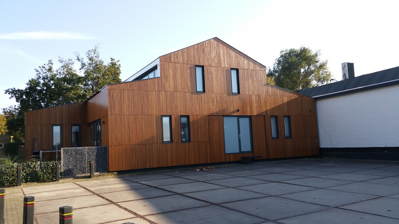

Nieuwbouw, verbouw en aanbouw
Een nieuw huis laten bouwen, een gekochte woning eerst goed verbouwen, of gewoon meer ruimte omdat het gezin groeit? Met een aanbouw of dakkapel blijft u wonen in uw vertrouwde buurt. Van ontwerp tot oplevering kunt u op ons rekenen.
- Nieuwbouwwoningen en twee-onder-een-kap
- Verbouwingen en metamorfoses
- Aanbouw en dakkapel